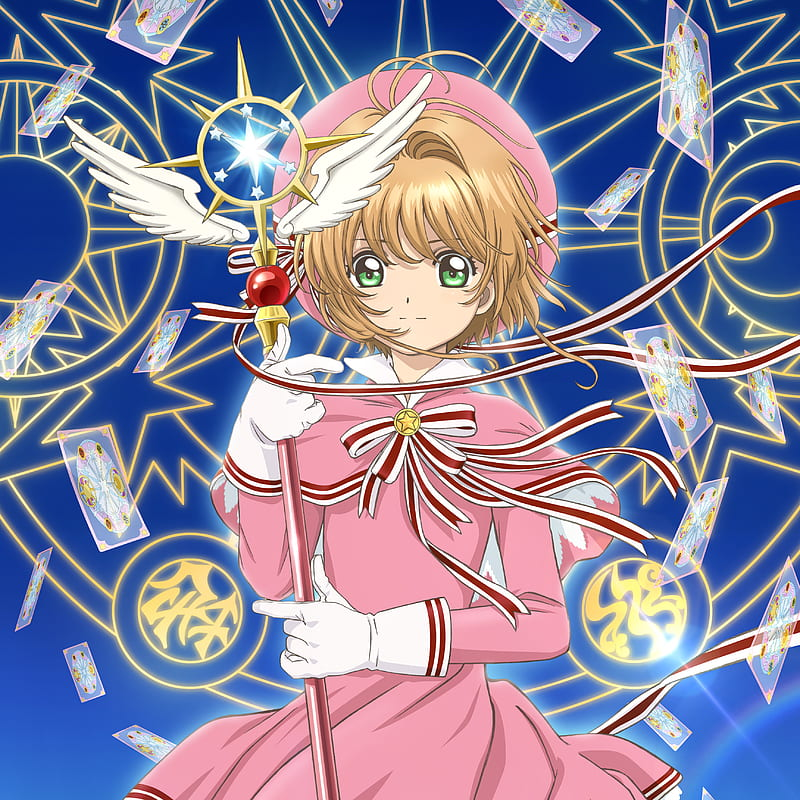
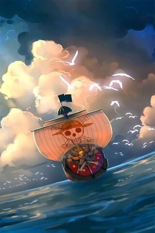
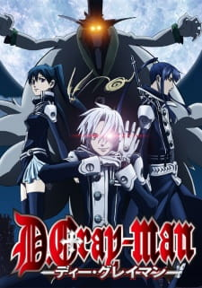
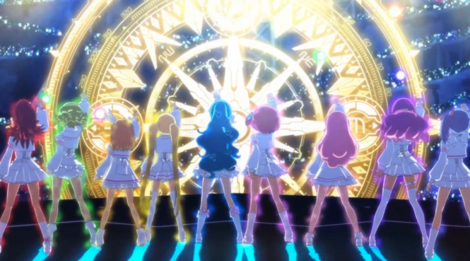
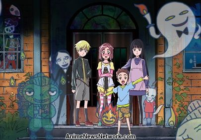
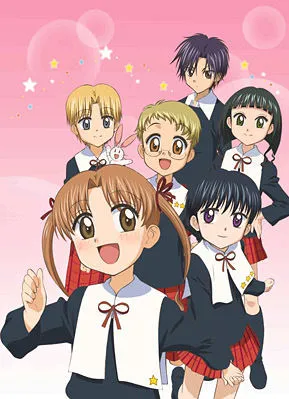
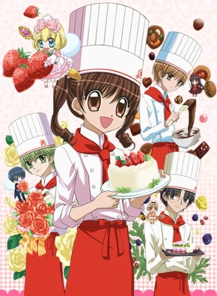
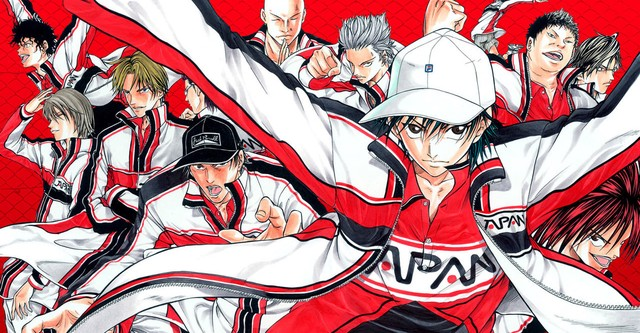
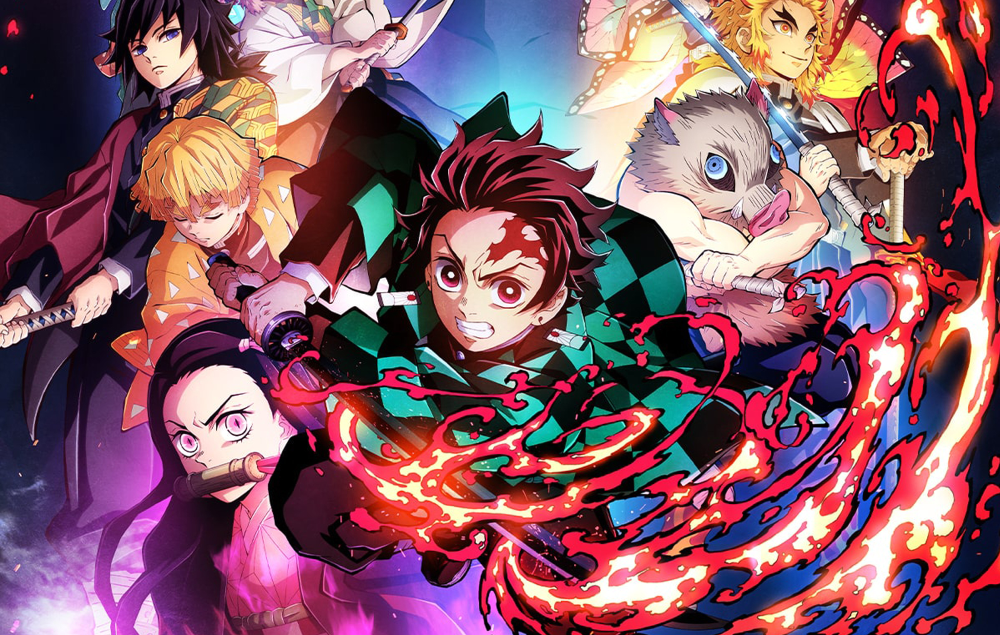

I enjoy working with my hands. I don't have much on
display on this page, but I enjoy cross stitch, crochet,
knitting and origami etc. These images are beginner
projects I've done.
I'm always a fan of anime, I think it's similar to video
games and books in a way that it's presenting a different
world to the audience. These are some of my favorite ones.

Cardcaptor Sakura

One PieceDetective Konan

D.Gray-man

AKB0048

Kaidan Restaurant

Gakuen Alice

Yumeiro Patishiēru

Tennis Prince

Demon Slayer